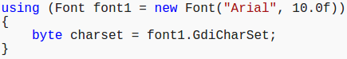

Provides a convenient syntax that ensures the correct use of IDisposable objects, for resource cleanup. Font must implement the IDisposable interface.

The using statement ensures that Dispose is called even if an exception occurs while you are calling methods on the object. You can achieve the same result by putting the object inside a try block and then calling Dispose in a finally block; in fact, this is how the using statement is translated by the compiler.

Multiple instances of a type can be declared in a using statement, as shown in the following example.

You can instantiate the resource object and then pass the variable to the using statement, but this is not a best practice.

In this case, the object remains in scope after control leaves the using block even though it will probably no longer have access to its unmanaged resources. In other words, it will no longer be fully initialized. If you try to use the object outside the using block, you risk causing an exception to be thrown. For this reason, it is generally better to instantiate the object in the using statement and limit its scope to the using block.